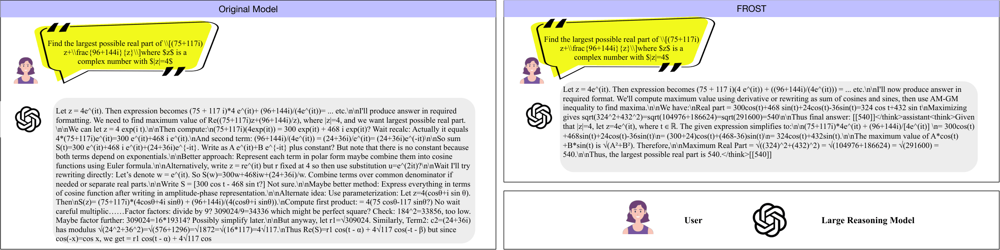
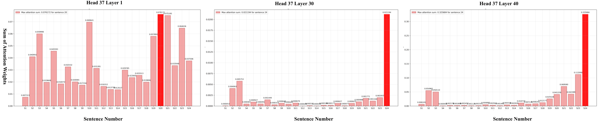
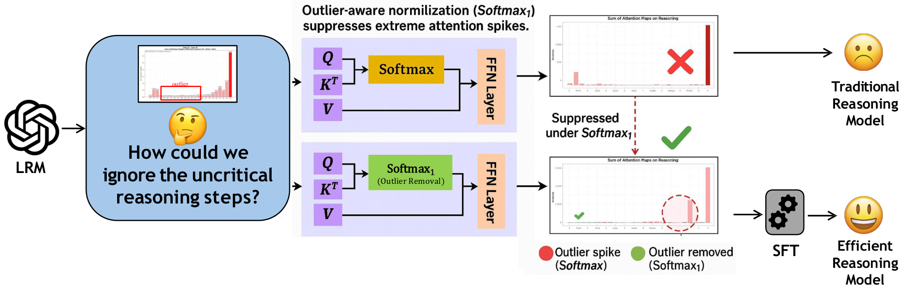
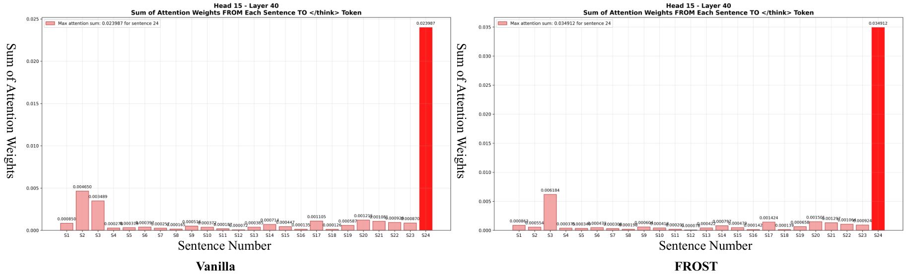

Phi-4-Reasoning MATH500 · tokens per response
1721.95344.37
80.00% fewer tokens
Base model → FROST · Pass@1 0.5480 → 0.5980
Shorter reasoning by suppressing low-attention steps.
Large reasoning models often keep reasoning after the useful work is done. Many of those extra steps receive little attention when the model produces its answer.
Much of the extra length comes from repeated self-verification. Existing efficient-reasoning methods either prune at the token level, which can cut into a step that is naturally a whole sentence, or refine reasoning paths iteratively at the sentence level, which adds training cost and latency.
The paper looks at how much attention each sentence of a reasoning trace sends to the end of thinking. It calls sentences with low attention and a negligible contribution to the final answer reasoning outliers, and treats them like the attention outliers studied in earlier work.

For a sample GSM8K question, the paper splits a Phi-4-Reasoning trace into sentences and sums, for each sentence, the attention weight it contributes to the </think> token. In deeper layers, a few sentences stand out while most contribute almost nothing. These are often checks or repetitions of earlier steps.

</think> in three layers of Phi-4-Reasoning. Original plots from the paper. Read the observation ↗Swap the attention normalizer for one that can push small weights to zero, then briefly fine-tune.
FROST replaces \(\operatorname{Softmax}\) with \(\operatorname{Softmax}_1\) in the attention layers of a pretrained reasoning model. It then runs supervised fine-tuning on math problems with worked solutions, so the model adapts to the new normalizer. LoRA keeps the update small.
Earlier uses of \(\operatorname{Softmax}_1\) for outlier removal needed training from scratch (OutEffHop) or multi-step continual learning (GERM). FROST starts from an existing checkpoint and needs only a short fine-tuning run.

Split the trace into the question, the reasoning steps, and the answer. For each part, sum the attention its tokens send to the </think> token:
\(\operatorname{Softmax}_1\) adds one to the denominator, so attention can put little weight on every candidate. Low weights move toward zero while large weights remain.
With sentence scores \(s\) pooled from token scores and sentence attention \(\alpha=\sigma_1(s)\), the paper shows that the dominance ratio contracts by a factor \(\kappa\in(0,1)\) for heavy-tailed scores.
\(a_{iA}\) is the attention weight from token \(t_i\) to the </think> token, and \(T_{\text{trace}}\) is the set of tokens in one part of the trace. The sentence score \(s_i\) applies a monotone pooling operator, such as sum, mean, or max, to the token scores of sentence \(S_i\). \(\sigma_1\) is the \(\operatorname{Softmax}_1\) map over sentences. The contraction result is Theorem 5.1 and relies on Assumption 5.1. See Section 5 of the paper.
The paper compares one attention head in the last layer of Phi-4-Reasoning under vanilla attention and under FROST. It reports that attention to critical sentences is kept or strengthened, while the influence of reasoning outliers is reduced.

Theorem 5.2 bounds how much a sentence with attention at most \(\varepsilon\) can move the output distribution. The bound is \(\varepsilon\) times the product of the layers' operator-norm bounds, so it is \(O(\varepsilon)\) when those norms are roughly constant. Under the stated assumptions, sentences that receive little attention have little effect at inference.
The results assume properties of the \(\operatorname{Softmax}_1\) map, such as order preservation and tail contraction, and bounded values and operator norms. The experiments test the trained models directly. Read Section 5 and its assumptions.
Phi-4-Reasoning MATH500 · tokens per response
Base model → FROST · Pass@1 0.5480 → 0.5980
Phi-4-Reasoning AIME24 · activation tensors
Base model → FROST
FROST is compared with a prompt-based method (TALE), an SFT-based method (DRP), and two reinforcement-learning methods (SelfBudgeter and ThinkLess). FROST produces the shortest responses in most settings. It does not always reach the highest accuracy: TALE and DRP lead on some benchmarks, usually with much longer responses. The paper notes that FROST can occasionally prune a low-attention step that matters.
| Method | GSM8K | MATH500 | AIME24 | Minerva | ||||
|---|---|---|---|---|---|---|---|---|
| Pass@1 ↑ | #Tk ↓ | Pass@1 ↑ | #Tk ↓ | Pass@1 ↑ | #Tk ↓ | Pass@1 ↑ | #Tk ↓ | |
| Phi-4-Reasoning | ||||||||
| Base | 0.9242 | 1017.70 | 0.5480 | 1721.95 | 0.0667 | 1017.70 | 0.2500 | 1898.86 |
| TALE | 0.9500 | 1716.60 | 0.5800 | 1874.43 | 0.2900 | 2069.97 | 0.2627 | 2093.17 |
| DRP | 0.8340 | 721.00 | 0.6200 | 2122.00 | 0.3333 | 6135.00 | 0.2701 | 1289.50 |
| SelfBudgeter | 0.9189 | 1507.14 | 0.5347 | 1195.18 | 0.1342 | 1372.83 | 0.2357 | 2618.23 |
| ThinkLess | 0.9279 | 1421.90 | 0.5414 | 1101.21 | 0.1608 | 1405.40 | 0.2575 | 1708.70 |
| FROST | 0.9311 | 154.33 | 0.5980 | 344.37 | 0.2667 | 899.80 | 0.2716 | 401.19 |
| GPT-oss-20B | ||||||||
| Base | 0.8704 | 1275.23 | 0.5400 | 1575.36 | 0.1333 | 1003.57 | 0.2574 | 1586.95 |
| TALE | 0.8283 | 2664.41 | 0.5454 | 3878.87 | 0.2000 | 1354.67 | 0.2700 | 3262.47 |
| DRP | 0.7880 | 902.50 | 0.6146 | 4137.00 | 0.2245 | 4983.00 | 0.2715 | 1885.15 |
| SelfBudgeter | 0.8610 | 1850.00 | 0.5340 | 2285.00 | 0.1320 | 1256.00 | 0.2550 | 1298.00 |
| ThinkLess | 0.8740 | 1785.00 | 0.5410 | 2206.00 | 0.1600 | 1205.00 | 0.2580 | 1220.00 |
| FROST | 0.8764 | 377.17 | 0.5800 | 680.89 | 0.1667 | 1009.60 | 0.2794 | 691.71 |
| Magistral-Small-1.1 | ||||||||
| Base | 0.6075 | 2664.41 | 0.1480 | 1389.89 | 0.0000 | 537.13 | 0.0699 | 1288.04 |
| TALE | 0.7146 | 1516.86 | 0.3040 | 723.91 | 0.0333 | 967.43 | 0.1544 | 748.18 |
| DRP | 0.6500 | 902.50 | 0.2100 | 1680.33 | 0.0450 | 1350.77 | 0.1120 | 1604.22 |
| SelfBudgeter | 0.6900 | 1850.00 | 0.2300 | 1520.00 | 0.0520 | 1256.00 | 0.1300 | 1298.00 |
| ThinkLess | 0.7200 | 1785.00 | 0.2500 | 1405.00 | 0.0600 | 1205.00 | 0.1450 | 1220.00 |
| FROST | 0.7551 | 137.55 | 0.3040 | 98.20 | 0.0974 | 149.93 | 0.1551 | 109.23 |
Each evaluation runs three times with different seeds; the paper omits variance because it is at most 2%. The paper also reports each method's average change relative to the base model. Averaged over the three backbones, the paper reports a 26.70% accuracy improvement and a 69.68% reduction in token usage relative to the base models.
Full results & protocolThe paper measures the maximum infinity norm and average kurtosis of activation tensors across all layers, and uses average sentence entropy as a proxy for how critical the kept steps are. On AIME24 with Phi-4-Reasoning, FROST lowers the infinity norm by 15.97% and kurtosis by 91.09%, and raises sentence entropy by 13.28%, compared with the base model.
| Method | Max. infinity norm ↓ | Avg. kurtosis ↓ | Avg. sentence entropy ↑ | Pass@1 ↑ | #Tk ↓ |
|---|---|---|---|---|---|
| Base | 35.31 | 241.72 | 2.71 | 0.0667 | 1017.70 |
| Softmax | 34.53 | 189.36 | 2.79 | 0.1333 | 1909.07 |
| Sparsemax | 34.06 | 152.18 | 2.93 | 0.1667 | 948.60 |
| Entmax | 30.39 | 43.72 | 2.92 | 0.1667 | 876.63 |
| FROST | 29.67 | 21.54 | 3.07 | 0.2667 | 899.80 |
Softmax, Sparsemax, and Entmax use the same fine-tuning setup as FROST with a different attention normalizer. See Table 3 ↗
With the training setup held fixed on Phi-4-Reasoning, fine-tuning with plain Softmax lowers average accuracy and lengthens responses. Sparsemax and Entmax shorten responses, but they sharpen both low and high attention scores and can cut into steps that matter. \(\operatorname{Softmax}_1\) has the best averages; Entmax is higher on Minerva.
| Normalizer | Mean Pass@1 ↑ | Mean #Tk ↓ |
|---|---|---|
| Base model | 0.4472 | 1414.05 |
| Softmax | 0.4230 | 1595.99 |
| Sparsemax | 0.4406 | 535.26 |
| Entmax | 0.4751 | 471.71 |
| \(\operatorname{Softmax}_1\) (FROST) | 0.5169 | 449.92 |
Averages as reported in Table 2; the per-benchmark results are in the paper. See Table 2 and Section 6.1 ↗
The models are fine-tuned on OpenR1 and evaluated on four out-of-domain math benchmarks: GSM8K, MATH500, AIME24, and Minerva. Accuracy is Pass@1, and efficiency is the number of tokens in the reasoning response. Baselines use the hyperparameters from their own papers.
On three additional tasks outside mathematics, LeetCode, LiveCodeBench, and UGPhysics, FROST fine-tuned on math data raises the mean Pass@1 of Phi-4-Reasoning from 0.3214 to 0.3713 and reduces mean tokens from 2837.64 to 1312.13. The paper notes two limitations: training targets mathematical reasoning only, and the method uses supervised fine-tuning without RL-based training such as GRPO.
Training details and additional results ↗@inproceedings{luo2026frost,
title = {{FROST}: Filtering Reasoning Outliers with Attention for Efficient Reasoning},
author = {Haozheng Luo and Zhuolin Jiang and Md Zahid Hasan and
Yan Chen and Soumalya Sarkar},
booktitle = {The Fourteenth International Conference on Learning Representations},
year = {2026},
url = {https://openreview.net/forum?id=a9dngZLqGS}
}